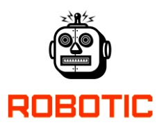

|  | Home | About | Contact |
About meHello, firstly, welcome and thank you for your interest.
My name is Iure Rosa Lima de Oliveira, I am a graduate student in the Electrical Engineering course at UFV. On this campus, I had the opportunity to act as a monitor of the discipline of ordinary differential equations, where I improved my teaching and skills with mathematical equations. I consider myself a very pragmatic person, always focused on obtaining results through
I am a lover of learning, always looking to acquire new experiences that add me professionally and personallity. I consider myself to be a very communicative person, I believe I am able to exercise great teamwork.
I currently conduct research at the Robotics Specialization Center - NERO | UFV, where I develop most of my work. I act as General Director at the Academic Center for Electrical Engineering, as a representative of the student body, and I am a volunteer with the Global Translators Community (GTC), where I translate courses offered by several universities.
I am mainly interested in the following areas:
In the future, I see myself as an electrical engineer passionate about what does. In advance, I make it clear that I am open to internship opportunities, I am sure that it will be a pleasure to work with you.
Experience
Academic education
|
|
| Copyright: Iure Rosa, 2021 | |